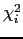
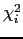

Next: Construction of the gradient Up: Construction of the values, Previous: Construction of the values, Contents Index
For the single residue models of
 and
and
 the chi-squared value 
which is optimised is simply Equation (
the chi-squared value 
which is optimised is simply Equation ( ) on page
) on page  in which the relaxation data is that of residue
in which the relaxation data is that of residue  . However for the global models
. However for the global models
 and
and
 in which all selected residues are involved the optimised chi-squared value is the sum of those for each residue,
in which all selected residues are involved the optimised chi-squared value is the sum of those for each residue,
 |
(theparentequation.10) |
where  is the residue index and
is the residue index and  is the total number of residues used in the analysis. This is equivalent to Equation (
is the total number of residues used in the analysis. This is equivalent to Equation ( ) when the index
) when the index  ranges over the relaxation data of all selected residues.
ranges over the relaxation data of all selected residues.